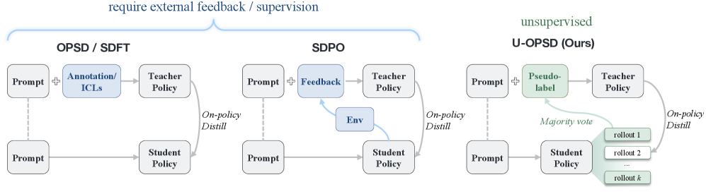
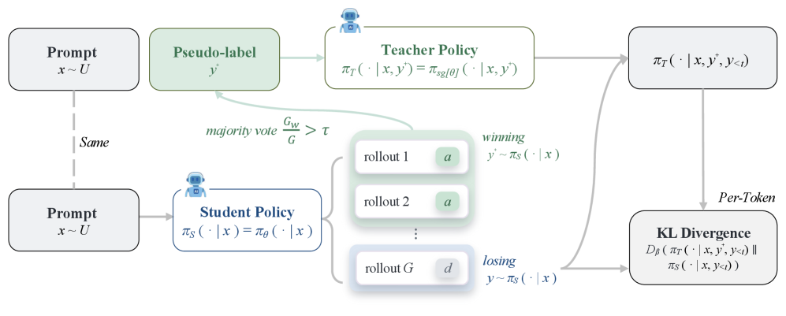

u-OPSD: On-Policy Self-Distillation without Any Supervision
TL;DR
- "On-Policy Self-Distillation without Any Supervision" (arXiv 2608.06296; Yijiang Li, Bingyang Wang, Yijun Liang, Yunjie Tian, Di Fu, Nuno Vasconcelos) closes the last supervision gap in the OPD family: no gold answers, no verifier, no stronger teacher. The model majority-votes its own rollouts into a pseudo-solution, conditions a frozen copy of itself on that pseudo-solution as a privileged-context teacher, and distills the resulting distribution into the rollouts that disagreed with the vote.
- On five competition-math benchmarks in Qwen3 non-thinking mode, u-OPSD beats every supervised baseline trained on the same prompts: average 49.49 vs 46.29 for gold-conditioned OPSD and 45.86 for GRPO at 4B (base 40.96), and 54.31 vs 52.04 (OPSD) at 8B — while label-free RL baselines (TTRL, RENT, Intuitor) gain at most 1.5 points over base under the same rollout budget.
- The mechanism is dense and targeted: instead of collapsing consensus into a scalar reward (TTRL-style), u-OPSD transfers the full solution-conditioned next-token distribution onto the exact prefixes where the model walks toward a minority answer — a free curriculum concentrated at the model's competence frontier.
Why this matters
Every method in the on-policy distillation family that this tracker follows still smuggles in external supervision somewhere. OPD needs a stronger teacher model; RLVR/GRPO needs gold answers for the verifier; OPSD (Zhao et al., 2026) removed the separate teacher by conditioning the same network on a ground-truth solution, but that solution still has to come from a labeled corpus. For the self-improvement agenda — models that keep getting better after the labeled data runs out — that residual dependence is the whole ballgame.
u-OPSD is the cleanest demonstration yet that the privileged context itself can be self-generated. The model's own consensus, formed by majority vote over parallel rollouts, stands in for the gold solution — and the result doesn't just approach the supervised methods, it beats them at both scales tested in non-thinking mode. That inverts the expected ordering: pseudo-labels that are only 86.7% correct produce better training signal than 100%-correct gold labels, because the supervision arrives as a dense token-level distribution at on-policy states rather than as a sparse sequence-level reward. It is also a genuine self-improvement loop with a measurable ceiling question attached: gains shrink in thinking mode (+2.2/+1.9), where consensus is already strong and headroom is thin — a concrete data point for where consensus-driven self-training saturates.
The core idea
Three prior objectives set up the punchline. GRPO scores each of \(G\) rollouts with a verifier against the gold answer \(a^\star\) and normalizes within the group — sparse, sequence-level signal that vanishes when all rollouts agree. On-policy distillation replaces the scalar reward with a dense token-level divergence to a teacher:
where \(\bar\pi\) is the gradient-detached policy, \(D_\beta\) is the generalized Jensen–Shannon divergence (forward KL at \(\beta=0\)), and the teacher \(\pi_T\) sees a possibly richer context \(c\) than the student. OPSD makes teacher and student the same network under different conditioning — the teacher additionally sees the ground-truth solution \(y^\star\):
u-OPSD's move: build the privileged context from internal consistency. Sample \(G\) rollouts, majority-vote a pseudo-answer \(\tilde a(x)\), pick an agreeing rollout \(y^{+}\) as pseudo-solution, and distill the pseudo-solution-conditioned teacher into the disagreeing rollouts \(y^{(i)}\in\mathcal{Y}^{-}_{x}\):
where the sum over \(i\) ranges over the selected disagreeing rollouts. The teacher — the same frozen network that already "knows" the consensus solution — shows the student what a solution-aware model would do at every token of a trajectory that is drifting toward the wrong answer. Correction lands exactly where the model is confidently wrong.

Figure 1 from the paper: prior on-policy (self-)distillation needs gold solutions, demonstrations, or environment feedback as the teacher's privileged context; u-OPSD replaces all of them with the model's own majority-vote consensus.How it works

Figure 2 from the paper: the vote partitions rollouts into agreeing and disagreeing sets; the teacher conditions on a pseudo-solution from the agreeing set and its distribution is distilled into prefixes of the disagreeing set.Per prompt, the loop has three stages — sample, vote, distill:
Input: prompt x, student π_θ, detached teacher π̄ (frozen at init),
rollouts G=8, confidence threshold τ=0.5
1: sample y(1..G) ~ π̄(·|x) at training temperature
2: a(g) ← Ans(y(g)) # parse \boxed{...}; ∅ if unparsable
3: ã ← plurality vote over valid answers (ties broken uniformly)
4: c(x) ← (1/G) Σ_g 1[a(g) = ã] # normalized by ALL G rollouts
5: Y+ ← {y(g): a(g) = ã}; Y− ← {y(g): a(g) ∉ {ã, ∅}}
6: if c(x) < τ or Y− = ∅: skip prompt # vote untrusted / nothing to fix
7: y+ ← select agreeing rollout (default: shortest)
8: B− ← select disagreeing rollouts (default: 1, uniform)
9: minimize Σ_{y−∈B−} Σ_t D_β( π̄(·|x, y+, y−_<t) ‖ π_θ(·|x, y−_<t) )
# forward KL (β=0), full vocabulary, per-token pointwise clipping
Details that carry weight:
- Invalid rollouts count against confidence. The self-consistency score \(c(x)=\frac{1}{G}\sum_g \mathbb{1}[a^{(g)}=\tilde a(x)]\) is normalized by all \(G\) rollouts, not just parsable ones, so truncated generations lower trust in the vote. Prompts with \(c(x)<\tau\) contribute no gradient; prompts where every valid rollout already agrees have nothing to correct. Training therefore concentrates on the competence frontier — prompts where the model can form a consistent consensus yet still assigns real probability to conflicting trajectories. That is an emergent curriculum with no difficulty labels.
- The teacher is frozen at the initial policy (following OPSD's ablations), and distillation uses forward KL over the full vocabulary with per-token clipping. The full-distribution objective matters much more here than under gold supervision: it beats sampled-token distillation by 17.8 points on AIME25 and 7.5 on HMMT25, vs 2.0/2.7 under gold labels.
- Training recipe: LoRA rank 64 on all attention/MLP projections, lr 5e-6, 150 steps, \(G=8\) rollouts at temperature 1.1, 4,096-token completions, \(\tau=0.5\). Same 30k OpenThoughts prompt subset as OPSD — using only the problem field, never the solutions.
Results
- Non-thinking Qwen3: 4B average 49.49 (base 40.96, SFT 42.73, GRPO 45.86, gold-OPSD 46.29); 8B average 54.31 (base 43.57, gold-OPSD 52.04). Best on 4/5 benchmarks at both scales. Label-free RL baselines under the same rollout budget — TTRL, RENT, Intuitor — gain ≤1.5 points over base.
- Thinking mode: 77.05 (4B) and 77.99 (8B), +2.2/+1.9 over base — on par with gold-OPSD, ahead of GRPO. Gains compress where the base model's consensus is already reliable.
- Instruction-tuned / MoE transfer: Qwen3-30B-A3B-Instruct-2507 goes 75.77 → 77.46 pass@1 and Qwen3-4B-Instruct-2507 67.00 → 68.78, with no model-specific tuning.
- Pseudo-label quality: 96.3% of rollouts parse, 94.0% of prompts clear \(\tau\), 86.7% of pseudo-labels match gold, and <10% of valid rollouts disagree with their vote — the distillation set is small and concentrated.
- Ablations: \(\tau=0\) (accept every prompt) actually beats the default \(\tau=0.5\) (59.21 vs 53.93 at step 150) — the filter costs more than the label noise it removes. \(G=12\) beats the cost-matched \(G=8\) by ~4.7 points. Distilling one random disagreeing rollout ("disagree-1") is the most consistent target choice; removing the cap ("disagree-all") is clearly worst. Conditioning the teacher on only the boxed answer instead of the full pseudo-solution collapses performance by 11–16 points — the teacher needs the reasoning trace, not the label.
How it connects
This slots directly into the tracker's OPD thread. It is the unsupervised completion of the progression mapped in "Survey: On-Policy Distillation for LLMs": OPD (external teacher) → OPSD (self-teacher + gold solution) → u-OPSD (self-teacher + self-generated pseudo-solution). The mechanism of conditioning a frozen self on privileged context is the same one "AgentOPSD: Recursive Self-Distillation for Agentic RL" exploits with environment feedback, and the finding that full-vocabulary distillation dominates sampled-token echoes the objective analysis in "OPD-Squared: On-Policy Delta Distillation". The contrast with TTRL is the same reward-vs-distribution argument "RLSVR: Task Transformation Induces Self-Verifiable Rewards" makes from the RL side: consensus contains far more training signal than the one bit a scalar reward extracts from it. And the emergent competence-frontier curriculum is the label-free analogue of the difficulty ratcheting in "RST: Recursive Synthesis for Long-Horizon Terminal Tasks".
Critical take
The headline "no supervision" deserves one asterisk: majority voting only works where answers are parseable and discrete — \(\mathrm{Ans}(y)\) extracts from \boxed{...}. That covers math and short-answer QA; it does not obviously cover proofs, code (where "same answer" needs execution equivalence), or open-ended agentic tasks. Second, the method's own ablation undermines its default: \(\tau=0\) beats \(\tau=0.5\) by 5+ points, which suggests the released recipe is leaving performance on the table and the confidence-filtering story is less load-bearing than the narrative implies. Third, all headline wins are on Qwen3 non-thinking — a regime with weak-but-votable consensus; thinking-mode gains are ~2 points, and everything is Qwen-family. The self-improvement question the paper doesn't answer: does iterating rounds (re-voting with the improved model) compound, or does the model collapse onto its own consensus biases? The evaluation stops at 150 steps of one round. Finally, note the mild inconsistency between the abstract (shortest pseudo-solution, longest incorrect completion) and Algorithm 1's stated defaults (shortest agreeing, one uniform disagreeing) — with the ablation table favoring the longest teacher reference; verify the released config before reproducing.
If you remember three things
- The privileged context OPSD needed from labels can be self-generated by majority vote — and distilling a pseudo-solution-conditioned self-teacher beats gold-supervised OPSD and GRPO on Qwen3 non-thinking math (49.49/54.31 avg at 4B/8B).
- The win over TTRL-style methods is density: consensus is used as a full next-token distribution at the student's own wrong-turn prefixes, not compressed into a scalar reward — and full-vocabulary KL is worth up to 17.8 points over sampled-token.
- Skip-rules create a free curriculum at the competence frontier (consistent-but-contested prompts), but the ablations say the confidence filter itself is net-negative (\(\tau=0\) is best) — the vote's value is the teacher context, not the filtering.